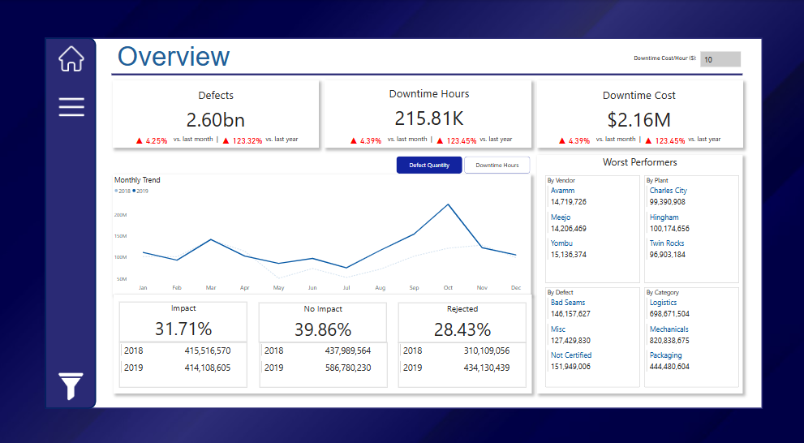
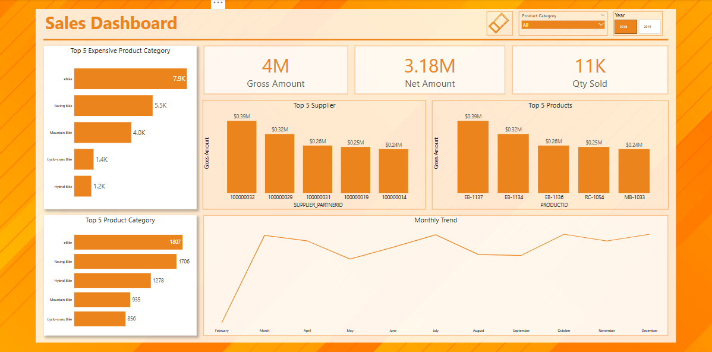
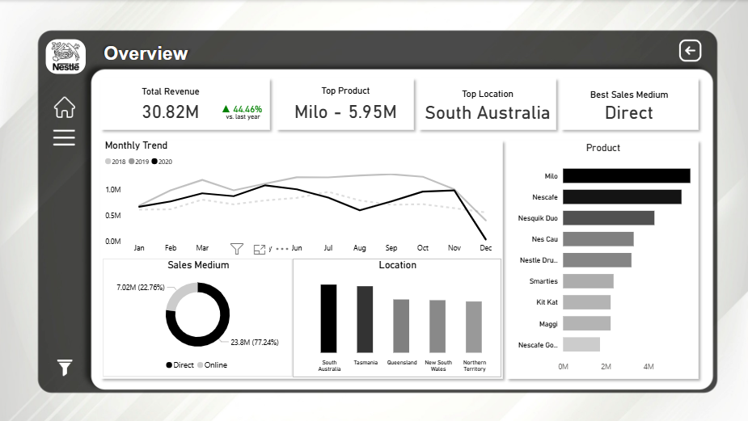
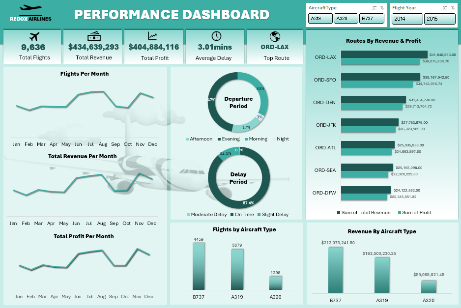

Hey, I’m Taiye 👋🏽
I turn confusing spreadsheets into answers people actually understand, sometimes even answers they didn’t know they needed.
I’m a Data Analyst & BI Developer who enjoys cleaning messy data, building dashboards that don’t confuse people, and helping teams make smarter decisions without guessing. I’ve worked across manufacturing and fintech, and I come from an Agricultural Extension and Rural Development background so I care a lot about real-world impact, not just pretty charts.
I mostly work with Excel, Power BI, and SQL. Lately, I’ve been learning Python and Machine Learning, because data curiosity is a lifelong condition.
If it’s useful, clear, and actually helps people work better, I’m interested.
Continue

This dashboard shows the Analysis of supplier performance for Enterprise Manufacturers Ltd to identify defect trends, downtime causes, and procurement inefficiencies. Using Power BI, I visualized vendor, plant, and material performance, highlighting high-risk suppliers and costly defects.

This project focused on cleaning, transforming, and analyzing sales and product data to extract business insights. Key takeaways include identifying the best-performing product categories, most profitable products, and top suppliers. The dataset was optimized by removing redundancies and improving structure, allowing for better decision-making based on sales trends and revenue impact.
Nestle Product Analysis (Power BI)

Nestlé is considering expanding its product portfolio, so the goal of this analysis was to understand how existing products are performing before introducing new ones. I looked at sales performance across products, time, locations, and sales channels to identify patterns, strengths, and gaps that could inform smarter expansion decisions.
Airline Operations Analysis (Excel)

This project analyzes airline operational and financial performance using flight, route, aircraft, and airport data. The goal is to uncover insights around revenue, profitability, delays, fuel efficiency, and airport utilization, and present them through a dynamic Excel dashboard.
Walmart Sales Report Analysis (SQL)

This project aims to explore the Walmart Sales data to understand top performing branches and products, sales trend of of different products, customer behaviour. The aims is to study how sales strategies can be improved and optimized.
Retail Sales Analysis using Excel

This project aims to explore the Walmart Sales data to understand top performing branches and products, sales trend of of different products, customer behaviour. The aims is to study how sales strategies can be improved and optimized.